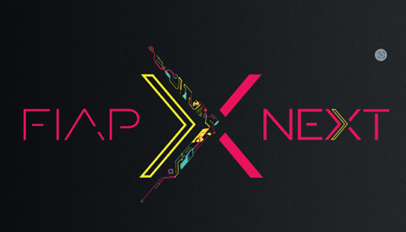

Referência em tecnologia e inovação no Brasil, a FIAP é uma faculdade que prepara profissionais para o futuro, com um ensino prático, professores atuantes no mercado e desafios reais que conectam os alunos às grandes empresas.
A FIAP é muito mais do que uma faculdade de tecnologia, é um verdadeiro ecossistema de inovação e aprendizado. Conhecida por sua abordagem moderna e focada no mercado, a instituição é referência quando se trata de formar profissionais capacitados para os desafios do futuro. Seja na graduação, pós-graduação ou cursos livres, a FIAP entrega um ensino que mistura teoria e prática, preparando os alunos para atuar em empresas de ponta ou até mesmo empreender.
Figura 1 – Logotipo da FIAP NEXT
Com um corpo docente formado por profissionais atuantes no mercado, a FIAP não ensina apenas tecnologia, mas também negócios, inovação e liderança. Seus cursos abrangem diversas áreas, incluindo:
Além disso, a instituição incentiva fortemente o uso dessas metodologias e outras abordagens inovadoras que fazem parte do dia a dia de grandes empresas.
A FIAP se destaca não apenas pelo seu ensino inovador, mas também pela forma como conecta seus alunos ao mercado de trabalho. A instituição tem parcerias com algumas das maiores empresas de tecnologia do mundo, permitindo que seus estudantes participem de desafios reais, hackathons e programas de mentoria...
Outro diferencial da FIAP é a sua estrutura moderna, pensada para proporcionar uma experiência de aprendizado imersiva e dinâmica. Os laboratórios contam com equipamentos de ponta e softwares atualizados, permitindo que os alunos experimentem na prática as tecnologias...
A instituição também aposta na personalização do ensino, oferecendo cursos e trilhas de aprendizado que se adaptam aos diferentes perfis de profissionais. Seja para quem deseja seguir carreira no desenvolvimento de software, na ciência de dados...
Por fim, a FIAP se destaca por seu compromisso com a inovação e a transformação digital. A faculdade não apenas ensina tecnologia, mas a utiliza para melhorar a experiência de aprendizado, com plataformas interativas, inteligência artificial aplicada ao ensino...